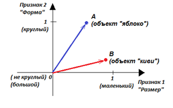
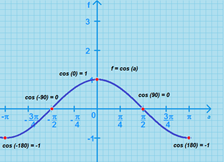
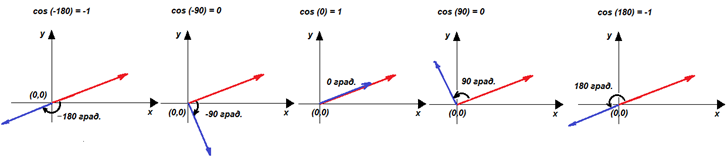
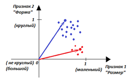
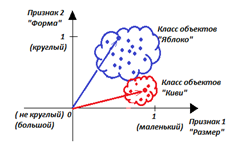
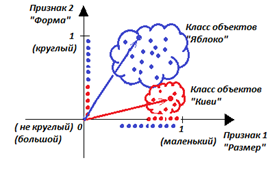
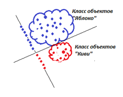
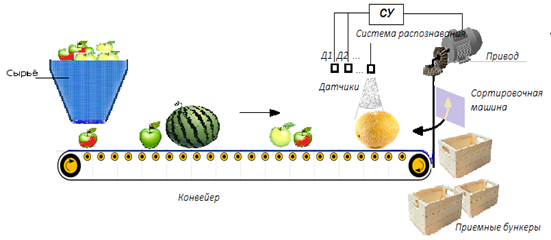

Интересна и важна задача поиска схожих объектов - какие два из тысячи разных объектов больше всего похожи друг на друга. Например, люди могут быть охарактеризованы сотней
признаков (трудолюбие, любознательность, активность, коммуникабельность, упорство и так далее). Какие два человека могут заменить друг друга? Кто из людей больше всего
подходит для выполнения определённой работы? Какие типы людей в дефиците в конкретной организации, а какие качества встречаются у людей чаще всего? Какие качества заменяют
друг друга, а какие – нет? Какие качества у людей можно назвать базовыми, основными, а какие только определяются через базовые и на сколько?
Итак, допустим, что у нас есть объекты A и B, каждый из которых характеризуется двумя признаками (x,y). Например, объект A – яблоко со
свойствами: средний размер, круглая форма. Обозначим первый признак «Размер» как x, второй признак «Форма» как y.
Тогда яблоко можно обозначить как А(x,y) = А(средний, круглая). Если договориться, что значение 1 признак «Размер» принимает у маленьких объектов, а
значение 0 этот же признак принимает у больших объектов, то для конкретного среднего яблока можно принять x=0.5. Если договориться, что значение 1
признак «Форма» принимает у круглых объектов, а значение 0 этот признак принимает у продолговатых объектов, то для конкретного круглого яблока можно
принять y=1. То есть яблоко – это А(0.5, 1.0). На рисунке объект А представлен синей точкой в координатах (x, y).

Распределение фруктов по размеру и форме (пример)
В этих же осях изобразим другой объект «киви» красной точкой. Объект В – киви со свойствами (x = почти маленький, y = овал).
Например, конкретный киви B (0.95, 0.3).
То есть, если мы имеем два объекта, то они могут быть представлены как две точки в системе координат, заданной описываемыми признаками.
Каждый признак – это отдельная ось координат, значение признака (то есть свойство) – точка на этой оси.
Насколько похожи эти объекты с точки зрения начала координат, где находится наблюдатель, может показать геометрический анализ.
Если дополнительно к системе объектов принять ещё и точку зрения О, то объекты будут характеризоваться векторами. В нашем случае
OA и OB.
Метрикой сходства-различия двух объектов может служить косинус угла между векторами, направленными на эти точки из начала координат. Измеряя угол, мы можем оценить
сходство объектов. Подсчитать угол в геометрии удобнее всего по формуле косинуса.
Косинус равен нулю, если векторы перпендикулярны, а угол между векторами равен +90 градусов или -90 градусов. Это означает, что объекты непохожи между собой,
абсолютно различны. Свойства объектов перпендикулярны!
Косинус равен единице (максимальное число), если векторы параллельны, угол между векторами равен 0 градусов (вектора сонаправлены).
Это означает, что объекты имеют максимальное сходство.
Косинус равен минус единице (минимальное число), если векторы параллельны, но противоположны, угол между векторами равен 180 градусов или -180 градусов
(направления векторов противоположны). Это означает, что объекты антиподы. Сходство их выражено в зеркальной симметрии.
То есть логично считать, что косинус будет удобной для нас метрикой схожести: 1 – объекты максимально схожи, 0 – объекты непохожи, (-1) – объекты
максимально различны.
На рисунке показан график косинуса угла α с его значениями f(α) и соответствующие примеры различного расположения объектов
А и В в осях (x,y).


Косинус угла между направлениями взгляда наблюдателя на сравниваемые
объекты как метрика схожести двух объектов
На рисунке яблоко и киви по данным признакам похожи друг на друга на величину 0,445, так как угол между векторами, смотрящими на эти объекты из точки
наблюдения (0,0), составляет 63 градуса. То есть, сходство у этих объектов есть (по данным признакам!), хотя и неполное.
Ясно, что яблоки бывают разные: и побольше, и поменьше, а так же как круглые, так и не совсем круглые (разумеется, вместо «круглый» правильнее говорить «шарообразный»).
Киви тоже не все похожи абсолютно друг на друга, их форма и размер имеют отличия, разброс. Этот факт отображен на рисунке множеством точек, каждая из которых обозначает
конкретный экземпляр фрукта.



Пример разброса свойств экземпляров двух классов в пространстве признаков
Однако, несмотря на различия, разные экземпляры киви геометрически находятся друг рядом с другом, составляя «облако», поскольку разные экземпляры киви имеют
больше сходства, чем различия. Все вместе они составляют класс «Киви».
Такое же рассуждение можно отнести и к яблокам. На рисунке показаны два разных класса: класс «яблоки» и класс «киви», состоящие из конкретных экземпляров.
Чем более компактны множества, тем меньше разнообразия у конкретных фруктов.
Заметим, что если по каким-то признакам разные классы имеют сходство, то классы или их проекции на оси могут пересекаться. Например, и киви, и яблоки бывают маленькие –
на рисунке проекция множества яблок и проекция множества киви на ось признака «Размер» пересекаются. А вот их проекции на ось «Форма» - нет. Поэтому яблоки от
киви лучше отличать по форме, а не по размеру.
Хотя, будем справедливы, на оси «Форма» классы в нашем случае находятся тоже довольно близко, так, что их проекции почти касаются краями. Стоит найтись совсем странному
яблоку, как оно будет ошибочно отнесено к киви. В этом случае надо проводить дополнительные оси, чтобы чётко отличить один класс от другого. Достаточно ввести ось
«Цвет», чтобы отличить коричневое киви от зеленых, красных, желтых яблок.
Другой вариант решения проблемы показан на рисунке. Достаточно провести самим оси «Размер-Форма» под другим углом, чтобы два класса стали отличаться друг от друга.
Разумеется, главная ось, на которой отчётливо будет видно отличие яблок от киви, будет уже называться по-другому: «Формо-размер».
Еще точнее, «7*Форма = 6*Размер» или 7y-6x=0. Для определения «что это за фрукт» достаточно взять пропорцию 7 к 6 от значений его
формы и размера.

Поворот осей в системе «Форма-Размер» для лучшего разделения классов
Все сказанное легко вычислить геометрически и, зная формулы, применить для более сложных и общих случаев, например, множества объектов, множества признаков и множества классов.
Как известно, косинус угла α вычисляется через скалярное sпроизведение векторов. Формула вычисления косинуса для трёх объектов (A,B,C) и трёх признаков
(x,y,z) имеет вид:
где объект А имеет характеристики А(Ax,Ay,Az), объект В(Bx,By,Bz), объект С(Cx,Cy,Cz).
Задача
В бункере «Сырьё» находятся предметы (яблоки, арбузы, дыни и т.д.), которые сортировочная машина (мотор, шестерня, вал, лопатка) по мере их поступления
с конвейера должна разложить по отдельным ящикам (классам). Для этого нужны датчики Д1, Д2, … (формы, вкуса, цвета и т.д.) и система управления,
которая должна распознавать образы предметов, которые ей посылают датчики, и подать соответствующий сигнал сортировочной машине. Образ предмета состоит из набора
нескольких сигналов, например, <Форма=0, Вкус=1, Цвет=1>, и называется синдромом объекта.

Техническое устройство «Сортировочная машина»
Дана таблица исходных данных. Взяты арбуз, яблоко, огурец, дыня, забор и помидор, которые отличаются и похожи признаками: цвет, вкус, форма, размер, способ размножения.
Для оценки объектов необходимо задать количественную шкалу признака. Шкалу задают нулем (точка) и отстоящей от него единицей (отрезок) или двумя точками по краям
шкалы: max и min. Например, «сладкое – НЕ сладкое», «маленькое – большое», и так далее.
Итак.
Признак
Цвет(Ц)
Вкус(В)
Форма(Ф)
Размер(Р)
Способ размножения(С)
Шкала свойств
1 (зеленое) – 0 (не зеленое)
1 (сладкое) – 0 (не сладкое)
1 (круглое) – 0 (не круглое)
1 (маленькое) – 0 (большое)
1 (семечки) – 0 (не семечки)
Яблоко (Я)
1
1
1
1
1
Арбуз (А)
1
1
1
0
1
Огурец (О)
1
0
0
1
1
Дыня (Д)
0
1
1
0
1
Забор (З)
1
0
0
0
0
Помидор (П)
0
0
1
1
1
Решение
Для краткости математической записи обозначим пространство признаков {Ц, В, Ф, Р, С}, объекты {Я, А, О, Д, З, П}.
Похожесть яблока и арбуза определим и вычислим как:
Формула показывает высокую схожесть яблока и арбуза, что соответствует углу 27° между векторами, направленными из начала координат (0,0,0,0,0) к каждому из объектов.
Шаг 1. «Определение похожести пар объектов»
Подставляя соответствующие значения признаков для разных пар объектов, определим аналогично их схожесть между собой. Результаты сравнений представлены в таблице.
Яблоко(Я)
Арбуз(А)
Огурец(О)
Дыня(Д)
Забор(З)
Помидор(П)
Яблоко(Я)
1
0.9
0.8
0.8
0.45
0.8
Арбуз(А)
0.9
1
0.6
0.87
0.6
0.7
Огурец(О)
0.8
0.6
1
0.3
0.6
0.7
Дыня (Д)
0.8
0.87
0.3
1
0
0.8
Забор(З)
0.45
0.6
0.6
0
1
0
Помидор(П)
0.8
0.7
0.7
0.8
0
1
Самыми похожими, исходя из таблицы, признаются Арбуз и Яблоко, степень похожести которых максимальна и равна 0.9.
Объединяем Арбуз и Яблоко в один класс «АЯ».
Шаг 2. «Определение похожести троек объектов»
Сравним класс АЯ по отдельности с каждым из оставшихся объектов из множества {Д,О,З,П}. Для этого вычислим четыре косинуса для троек
{АЯД, АЯО, АЯЗ, АЯП}.
Используя далее формулу косинуса для остальных троек, имеем:
cos(Арбуз, Яблоко, Дыня) = 0,39
cos(Арбуз, Яблоко, Забор) = 0,22
cos(Арбуз, Яблоко, Огурец) = 0,26.
Таким образом, больше всего похож на класс «АЯ» объект Дыня (0,39). Объединяем АЯ с Д в один класс АЯД.
Примечание. Для общности решения можно проверить все возможные тройки на похожесть, а не только тройки с АЯ, и найти самые схожие между собой три объекта.
Но следует иметь в виду, что в пространствах высокой размерности это приведет к резкому увеличению числа вычислений.
Шаг 3. «Определение похожести четверок объектов»
Сравним класс АЯД по отдельности с каждым оставшимся объектом из множества {О,З,П}. Для этого вычислим три косинуса для четверок
{АЯДО, АЯДЗ, АЯДП}.
Примечание 1. Если сравнивается сразу множество объектов, то один из них может стать началом координат и расположиться там, где находится наблюдатель,
с точки зрения которого формируется суждение о похожести объектов. В нашем примере наблюдатель находился в точке (0,0). За начало координат можно также принять
центр тяжести какого-либо класса объектов или центр тяжести всех рассматриваемых объектов.
От выбора начала координат существенно зависит результат. Так, например, искусственно удаленный центр дает нам вид на множество объектов, как бы сосредоточенных в
одной (далекой от нас, но компактной) области. На наш взгляд такие объекты будут весьма похожи друг на друга, как объекты, которые мы наблюдаем издалека.
Вряд ли с расстояния 1 км вы поймёте по фигуре человека его возраст, мужчина он или женщина – все фигуры будут казаться вам одинаковыми.
Перенос начала координат в область между объектами даёт нам возможность считать часть объектов, которая окажется в одной стороне, одним классом, а другую часть, в другой
стороне, - другим классом. В нашем примере, мужчины – слева, женщины – справа. Мы видим ситуацию более детально, находим больше различий.
Положение начала координат - это точка зрения.
Примечание 2. Мы брали значения свойств из множества 0 или 1. Результат нашей работы будет намного точнее, если значения признаков
будут дробными числами (между 0 и 1), исходя из пропорции присутствия того или иного свойства в объекте. Например, яблоко не всегда бывает
только размером 1, как в нашем примере.
Можно взять в качестве максимального объекта Арбуз с присвоением ему значения размера 0. Если в магазине измерить размеры у пяти попавшихся нам на глаза
яблок, то окажется, что яблоки бывают 0,3; 0,2; 0,33; 0,24; 0,05 от размера арбуза. В среднем размер яблока в магазине оказался равен 0,224.
Чем больше яблок будет перемерено, тем точнее будет результат.
Задания
Дайте определение классу «кошка», «метрополитен», «ракета», «автомобиль». Проверьте себя на множестве разнообразных примеров.
Охарактеризуйте своих друзей набором каких-то признаков, дайте оценку каждому человеку по каждому признаку. Методом косинусов определите похожесть ваших
друзей друг на друга. Какие пары друзей наиболее близки друг другу? Кто больше всего похож на вас? Что изменится, если поменять точку зрения? Постройте дерево
классов. Нарисуйте граф, где вершинами будут ваши друзья, отстоящие друг от друга на величину «сходства-различия». Какой размерности получилось поле для корректного
отображения расстояний между вершинами графа?